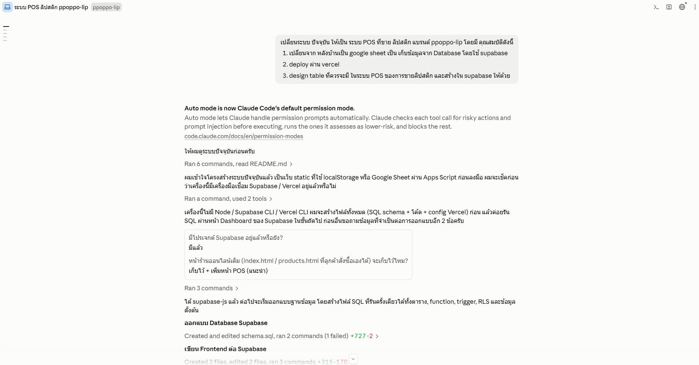
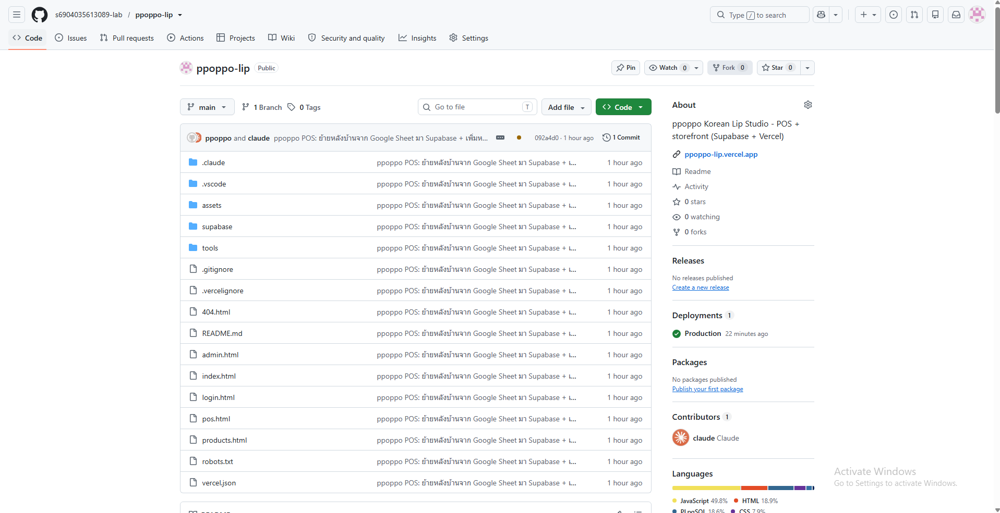
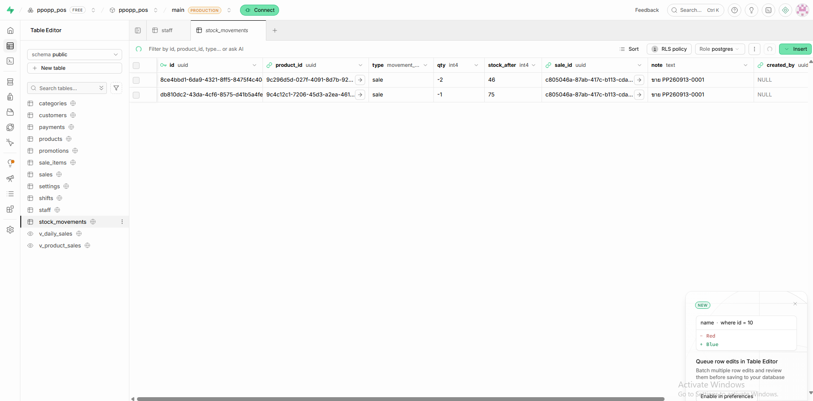
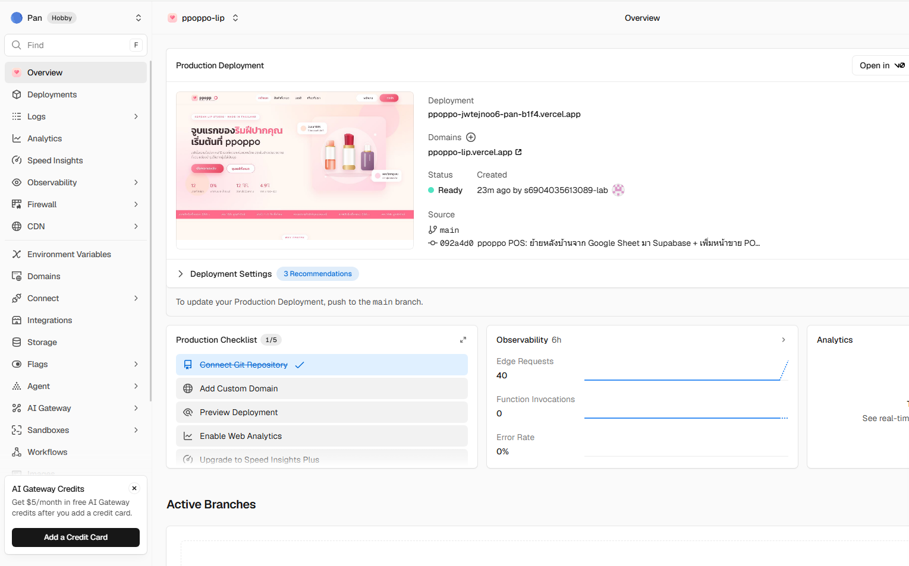

สรุปการทำระบบ POS ขายลิปสติก ppoppo-lip
ย้ายหลังบ้านจาก Google Sheet → Supabase · เก็บโค้ดบน GitHub · ขึ้นเว็บด้วย Vercel
ย้ายหลังบ้านจาก Google Sheet → Supabase · เก็บโค้ดบน GitHub · ขึ้นเว็บด้วย Vercel
เริ่มจากเปิดโปรเจกต์เว็บ ppoppo เดิมใน Claude Code แล้วพิมพ์คำสั่งเดียวให้เปลี่ยนระบบเป็น POS โดยระบุ 3 เงื่อนไขชัดเจน จากนั้น Claude อ่านโค้ดเดิม ถามข้อมูลเพิ่ม 2 ข้อ (มีโปรเจกต์ Supabase แล้วหรือยัง / จะเก็บหน้าร้านออนไลน์ไว้ไหม) แล้วลงมือออกแบบตาราง เขียน SQL หน้า POS หลังบ้าน และคู่มือให้ทั้งหมด

ยังไม่มีรูป images/1-prompt.png'">
สร้าง Git repository ในเครื่องด้วย git init ใส่ .gitignore แล้ว commit โค้ดทั้งหมด
จากนั้นสร้าง repo s6904035613089-lab/ppoppo-lip บน GitHub และ git push -u origin main
โค้ดบน GitHub นี้เป็นต้นทางให้ Vercel ดึงไป deploy อัตโนมัติทุกครั้งที่ push ขึ้น branch main

ยังไม่มีรูป images/2-github.png'">
สร้างโปรเจกต์ ppopp_pos แล้วรันไฟล์ supabase/schema.sql ใน SQL Editor ครั้งเดียว ได้ตาราง 11 ตาราง
(products, customers, sales, sale_items, payments, stock_movements, promotions, shifts, staff, categories, settings)
พร้อม function create_sale ที่ตัดสต็อก/ใช้โค้ดส่วนลด/สะสมแต้มในธุรกรรมเดียว, trigger คืนสต็อกเมื่อยกเลิกบิล, Row Level Security และข้อมูลสินค้า 12 เฉด
จากนั้นนำ Project URL + publishable key ใส่ใน assets/js/config.js และสร้างบัญชีพนักงานที่ Authentication → Users

ยังไม่มีรูป images/3-supabase.png'">
เข้า Vercel ด้วยบัญชี GitHub → Add New Project → Import repo ppoppo-lip → Framework = Other (ไม่ต้อง build) → Deploy
ไฟล์ vercel.json ตั้งค่า URL สวย (/pos, /admin, /login), security headers และ cache ให้แล้ว
ส่วน .vercelignore กันไม่ให้ไฟล์ SQL/เอกสารขึ้นเว็บสาธารณะ ได้โดเมน ppoppo-lip.vercel.app และจะ deploy ใหม่อัตโนมัติเมื่อ push โค้ด

ยังไม่มีรูป images/4-vercel.png'">ทุกลิงก์ด้านล่างใช้งานได้จริง หน้า POS และหลังบ้านต้องล็อกอินด้วยบัญชีพนักงานที่สร้างใน Supabase
| 🌸 เว็บไซต์หน้าร้าน | https://ppoppo-lip.vercel.app |
| 🛍️ สินค้าทั้งหมด | https://ppoppo-lip.vercel.app/products |
| 🔑 เข้าสู่ระบบพนักงาน | https://ppoppo-lip.vercel.app/login |
| 🧾 หน้าขาย POS | https://ppoppo-lip.vercel.app/pos |
| ⚙️ หลังบ้าน (admin) | https://ppoppo-lip.vercel.app/admin |
| 🐙 Source code (GitHub) | https://github.com/s6904035613089-lab/ppoppo-lip |
| 🗄️ Supabase project | https://supabase.com/dashboard/project/mbqhzvhfycafnsobbshk |
| ▲ Vercel project | vercel.com → โปรเจกต์ ppoppo-lip |